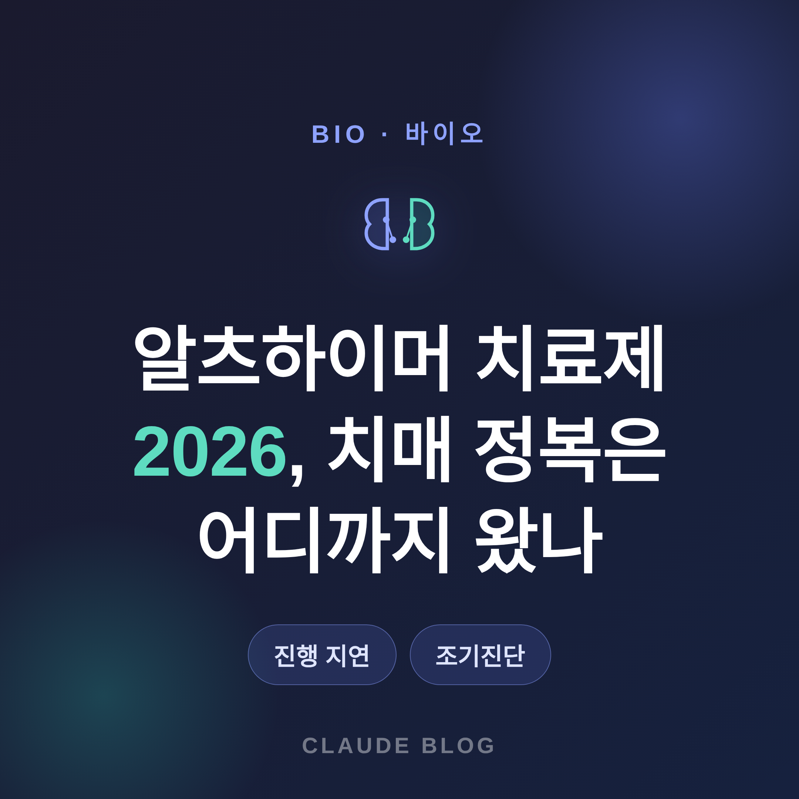
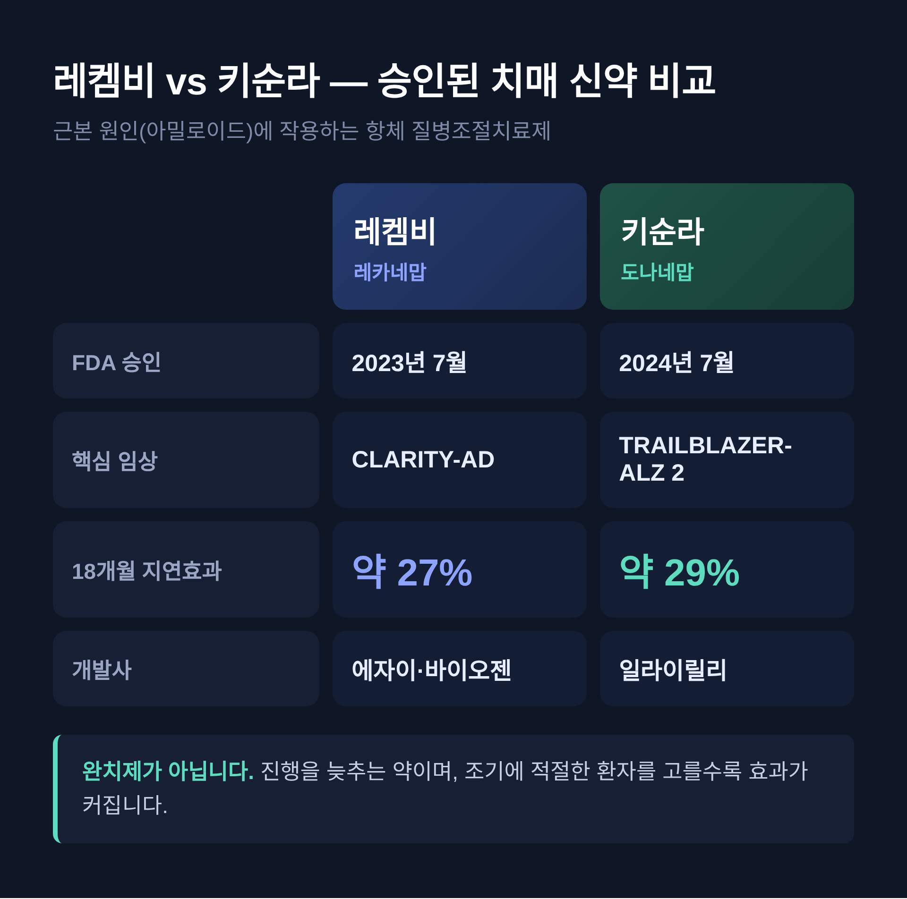
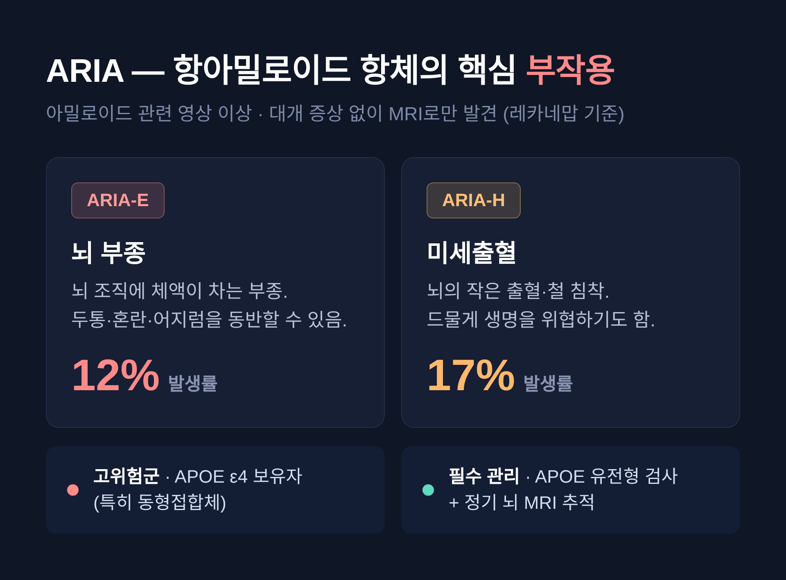
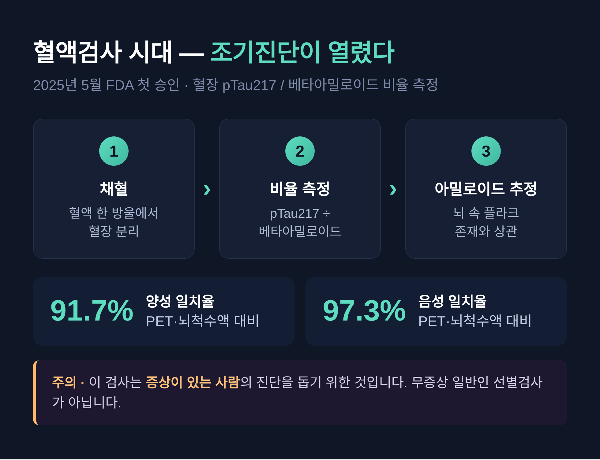

[바이오] 알츠하이머 치료제 2026, 치매 정복은 어디까지 왔나
알츠하이머 치료제가 2026년 분수령을 맞고 있습니다.
이번 글에서는 이미 승인된 치매 신약의 효과와 한계, 부작용, 그리고 올해 쏟아질 임상 결과를 정리해 보겠습니다.
먼저 결론부터 말씀드립니다. 아직 "완치"는 없습니다. 다만 진행을 늦추고, 더 일찍 발견하는 단계에는 들어섰습니다.
이 글은 의료 조언이 아니라 정보 제공입니다. 진단과 치료 결정은 반드시 전문의와 상담하시길 권합니다.

왜 2026년이 분수령인가
세 가지가 한 해에 겹쳤습니다.
첫째, 차세대 후보물질의 후기 임상 결과가 몰려 있습니다.
2026년에는 3상 8건이 종료될 예정입니다. 파이프라인 규모도 역대 가장 다양합니다.
알츠하이머협회 집계로 158개 후보물질이 192건의 임상에서 평가 중이며, 지난 10년간 약 40% 늘었습니다.
둘째, 표적이 다변화했습니다.
예전엔 아밀로이드 한 곳에 매달렸습니다. 지금은 타우·염증·면역으로 갈래가 넓어졌습니다.
셋째, 혈액 기반 조기진단이 현실이 됐습니다.
이 세 흐름이 맞물려 "치매 정복의 분기점"이라는 표현이 나오는 것입니다.
이미 승인된 약 — 레켐비와 키순라
근본 원인(아밀로이드)에 작용하는 항체치료제가 두 종 나와 있습니다.
질병의 진행 자체를 조절한다는 의미에서 "질병조절치료제"로 분류됩니다.
다만 완치제가 아니라 진행을 늦추는 약입니다. 이 구분이 중요합니다.
| 구분 | 레켐비(레카네맙) | 키순라(도나네맙) |
|---|---|---|
| FDA 승인 | 2023년 7월 | 2024년 7월 |
| 핵심 임상 | CLARITY-AD | TRAILBLAZER-ALZ 2 |
| 18개월 지연 효과 | 약 27% | 약 29% |
| 개발사 | 에자이·바이오젠 | 일라이릴리 |
도나네맙의 경우, 타우 병리가 낮은 초기 환자에서는 인지저하를 최대 60%까지 늦췄다는 분석도 있습니다.
조기에, 적절한 환자를 골라 쓸수록 효과가 크다는 뜻입니다.

기대치는 냉정하게
여기서 한 박자 쉬어야 합니다.
두 약이 보인 지연 효과의 절대값은 작습니다.
18개월 임상에서 측정된 차이는 환자·가족·의사가 체감하기 어려울 수 있다고 전문가들은 지적합니다.
통계적으로 유의하다는 것과 일상에서 느껴진다는 것은 다른 문제이기 때문입니다.
증상을 되돌리거나 멈추는 약이 아닙니다.
"진행 속도를 늦추는" 약이라는 점 — 이 선을 분명히 그어야 실망과 오해를 줄일 수 있습니다.
부작용 — ARIA를 반드시 알아야 합니다
항아밀로이드 항체에서 가장 중요한 부작용은 ARIA입니다.
아밀로이드 관련 영상 이상, 즉 뇌의 부종(ARIA-E)이나 미세출혈(ARIA-H)을 가리킵니다.
대개는 증상 없이 MRI로만 발견됩니다.
그러나 두통·혼란·어지럼·시각 장애·구역·발작을 동반할 수 있고, 드물게 생명을 위협하기도 합니다.
레카네맙에서 ARIA-E는 약 12%, ARIA-H는 약 17% 수준으로 보고됐습니다.
위험이 더 높은 사람도 있습니다.
APOE ε4 유전자 보유자, 특히 동형접합체에서 위험이 큽니다.
그래서 치료 전 APOE 유전형 검사와 정기적인 뇌 MRI 추적이 권고됩니다.
항응고제를 복용하는 분 등 일부 환자에서는 위험이 더 커집니다.
정리하면 이렇습니다. 누구나 편하게 쓸 수 있는 약은 아닙니다.

표적이 넓어졌다 — 아밀로이드를 넘어
2026년 파이프라인의 가장 큰 특징은 표적의 다변화입니다.
아밀로이드 표적 비중은 약 20%로, 10년 전 3분의 1 수준에서 줄었습니다.
반면 염증·면역 기능이상을 노리는 후보는 약 6%에서 약 20%로 늘었습니다.
타우를 표적하는 후보 역시 약 6%에서 약 20%로 증가했습니다.
배경에는 오래된 논쟁이 있습니다.
아밀로이드가 핵심인가, 타우가 핵심인가 하는 물음입니다.
지난 20년간 아밀로이드를 줄이는 데 성공하고도 임상이 반복 실패하면서, 단일 원인 시각에 의문이 제기됐습니다.
최근에는 인지저하의 정도가 아밀로이드보다 타우 병리와 더 밀접하다는 근거가 쌓이고 있습니다.
그래서 무게중심이 옮겨가는 중입니다.
단일 표적에서 병용요법으로, 항체 일변도에서 백신·저분자 같은 다른 접근으로 갈라지고 있습니다.
혈액검사 시대 — 조기진단이 열렸다
치료제가 "초기" 환자에게 효과적이라는 사실이, 조기진단의 가치를 끌어올렸습니다.
2025년 5월, 미국 FDA가 알츠하이머 관련 혈액검사를 처음으로 승인했습니다.
혈장에서 pTau217과 베타아밀로이드 두 단백질의 비율을 측정하는 방식입니다.
이 비율이 뇌 속 아밀로이드 플라크의 존재와 상관합니다.
성능도 준수합니다.
아밀로이드 PET·뇌척수액 결과와의 일치율이 양성 91.7%, 음성 97.3%로 보고됐습니다.
침습적인 척수액 검사나 고가의 PET 부담을 줄여, 진단 접근성을 크게 높였습니다.
다만 한 가지는 짚고 가야 합니다.
이 검사는 증상이 있는 사람의 진단을 돕기 위한 것입니다.
증상 없는 일반인을 대상으로 한 선별검사가 아닙니다. 이 점을 오해하지 않으시길 권합니다.

국내는 지금 — 레켐비 도입, 키순라 대기
국내 상황도 빠르게 움직이고 있습니다.
레켐비는 2024년 5월 식약처 허가를 받아 도입의 길이 열렸습니다.
도입 1년 차에는 국내 시장에서 사실상 독주 체제라는 보도가 있습니다.
키순라는 사정이 다릅니다.
FDA 승인 이후 일본·중국·유럽에서 차례로 허가를 받았으나, 2026년 기준 국내는 아직 미허가입니다.
식약처가 한국인 데이터를 요구하면서 가교임상이 마무리 단계에 있는 것으로 알려졌습니다.
국산 후보도 눈여겨볼 만합니다.
아리바이오의 경구용 AR1001은 글로벌 3상 POLARIS-AD를 진행 중입니다.
13개국에서 1,500명 이상이 참여했고, 톱라인 결과가 2026년 발표될 예정입니다.
다만 최종 결과는 아직 공개되지 않았으니, 성패를 미리 단정하지는 않겠습니다.
끝으로 한 마디만 더 드리겠습니다.
지난 20년은 거듭된 실패의 시간이었습니다.
지금은 진행을 늦추는 약, 더 일찍 찾아내는 검사, 그리고 더 다양한 표적을 손에 쥔 시간입니다.
"치매 정복은 아직 도착하지 않았습니다. 다만 길은 분명히 트였습니다."
완치가 가능하냐고 물으신다면, 아직은 아니라고 답하겠습니다.
그러나 한 해 뒤 같은 질문에 다른 답을 할 수 있을지도 모릅니다.
2026년이 분수령으로 불리는 이유가, 바로 그 가능성에 있습니다.